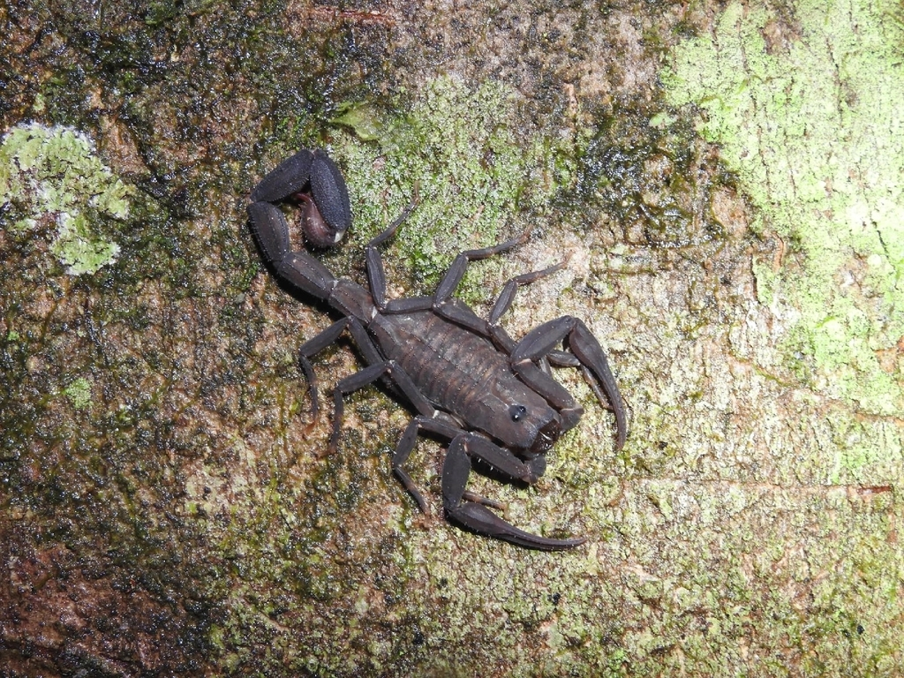

Tityus obscurusIdentificação
Escorpião de pequeno a médio porte, podendo atingir cerca de 6 a 8 cm de comprimento. Apresenta coloração escura, geralmente preta ou preto-acinzentada, com corpo e cauda de tonalidade uniforme. Essa coloração o diferencia facilmente das espécies amareladas e marrons.
Peçonhento?
Sim. Possui peçonha de importância médica, podendo causar dor intensa, sudorese e outros sintomas sistêmicos. Em alguns casos, os acidentes podem apresentar manifestações neurológicas. Em caso de acidente, é fundamental procurar atendimento médico imediatamente.
Importância ecológica
Atua como predador de insetos e outros pequenos invertebrados, contribuindo para o controle populacional dessas espécies e para o equilíbrio dos ecossistemas.
Habitat
É encontrado principalmente na região Amazônica, em ambientes naturais como florestas e áreas com grande umidade. Pode também ocorrer em áreas próximas a residências, abrigando-se em locais escuros, úmidos e com disponibilidade de alimento.
Comportamento
Possui hábitos noturnos e permanece escondido durante o dia. Geralmente evita o contato com seres humanos, mas pode reagir quando se sente ameaçado. A maioria dos acidentes ocorre por contato acidental.
Para prevenir acidentes, recomenda-se manter o ambiente limpo, evitar acúmulo de materiais e verificar roupas e calçados antes do uso. Em caso de acidente, deve-se procurar atendimento médico.